Aston Parish Church, Birmingham
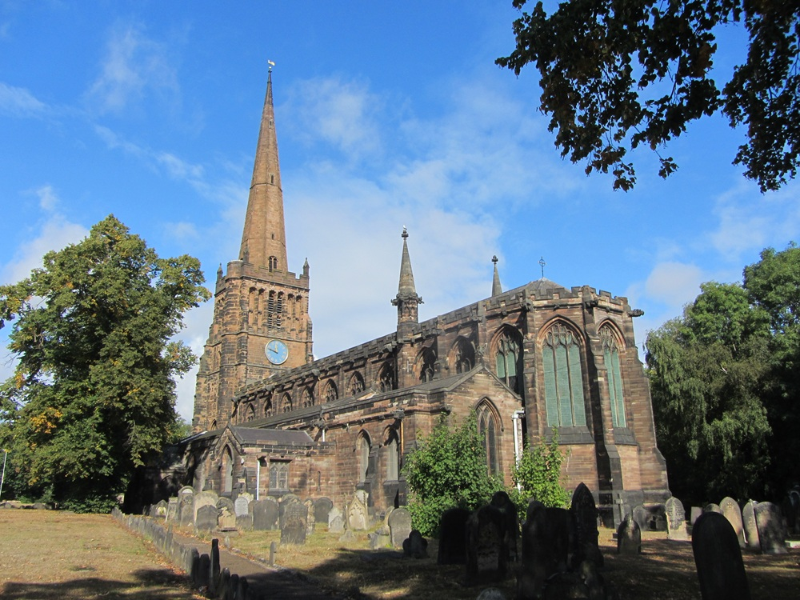
Parish of Aston and Nechells Birmingham is a Victorian Gothic parish church with Tudor tower and a collection of monuments from the last eight centuries.
Aston Parish Church Memorials
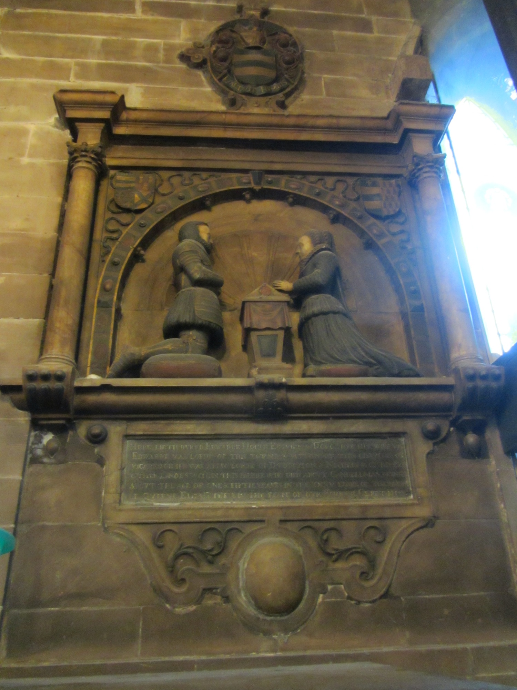
HERE LIETH BURIED EDWARDE HOPER EDWARDE & HOLCT THE HIS WIFERY. EDWARDE WAS LORD OF THIS TOWNE & PATRON OF THE CHURCHE . OR VICAR. HE WAS ALSO LORDE OF DIVDECTION . NEARE . E OF PHOE OTHER LANDES WITHIN THE RAWOT OF DUR ABOVE UNVELLEALIN DONE ABOUT THE AGE OF ONES FIFTIE YEARS IN THE XXXI YEARE OF THE RAIGNE OF QUEENE ELIZABETH THE LD THE YEARE OF OUR SAVIOUR CIXUEATION. Notes on the reading - The first line records Edward Hoper (or Hooper) and his wife (the female figure) buried here. - He is described as lord of the town, patron (or vicar) of the church, and also lord of certain lands nearby. - He died aged about 50 in the 31st year of Queen Elizabeth I’s reign (≈ 1589). - A few words remain slightly uncertain because of erosion and the old letter shapes (especially “HOLCT”, “DIVDECTION”, “RAWOT”, and the exact form of the year).
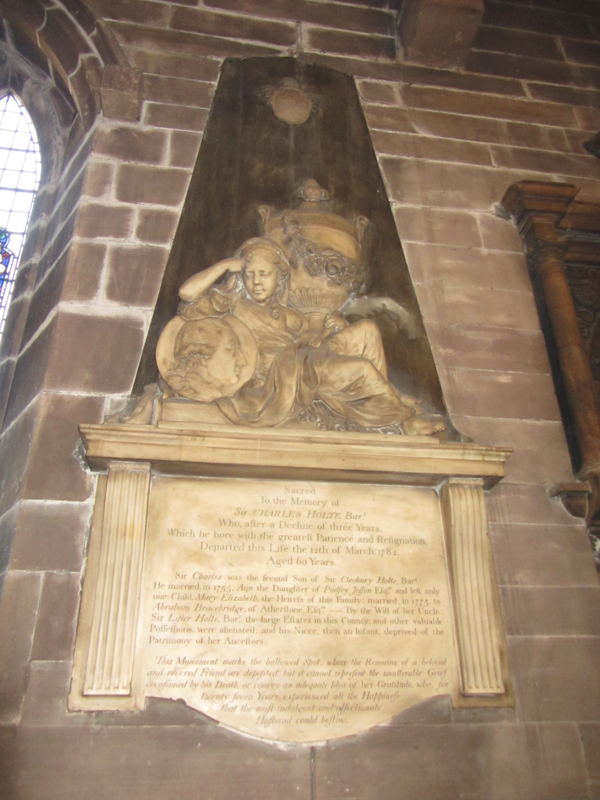
Monument with mourning figure, urn, and medallion portrait; to Sir Charles Holte, 6th/last Baronet Sacred To the Memory of Sir CHARLES HOLTE, Bart. Who, after a Decline of three Years, Which he bore with the greatest Patience and Resignation, Departed this Life the 12th of March 1782. Aged 60 Years. Sir Charles was the second Son of Sir Cleobury Holte, Bart. He married, in 1755, Ann the Daughter of Pudsey Jesson Esqre and left only one Child Mary-Elizabeth, the Heiress of this Family; married, in 1775, to Abraham Bracebridge, of Atherstone, Esqre - By the Will of her Uncle, Sir Lister Holte, Bart. the large Estates in this County, and other valuable Possessions, were alienated; and his Niece, then an Infant, deprived of the Patrimony of her Ancestors. This Monument marks the hallowed Spot, where the Remains of a beloved and revered Friend are deposited: but it cannot represent the unalterable Grief occasioned by his Death, or convey an adequate Idea of her Gratitude, who, for twenty seven Years, experienced all the Happiness that the most indulgent and affectionate Husband could bestow.
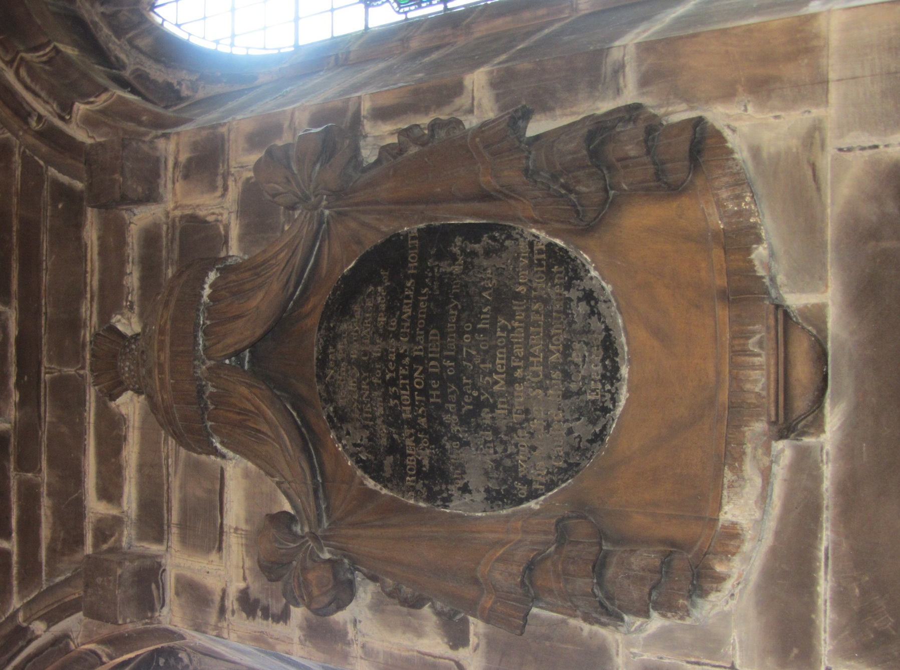
Circular plaque under draped canopy, to a family servant Near this Place lyeth the Body of HENRY CHARLES Servant for the space of 33 Years to ROBERT HOLTE & Sr CHARLES of ASTON Baronets He DIED on the 3d day of January in the Year 1700 And in ye 54th of his Age In Memory of whose True & Faithfull Service His Master Sr CHARLES HOLTE Caused this Monument to be Erected
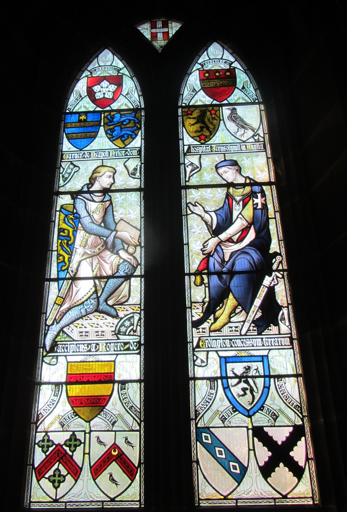
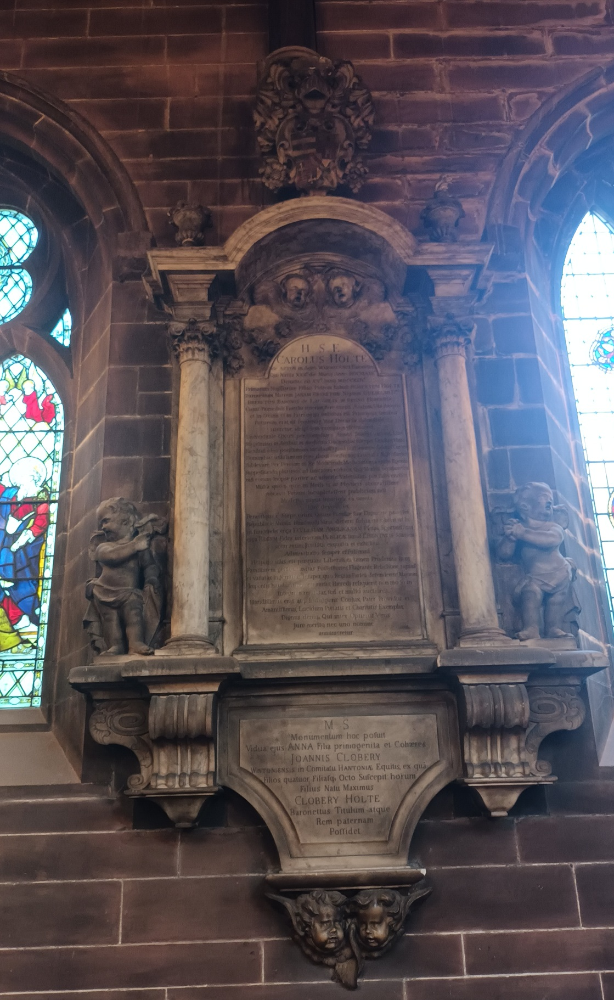
Large architectural monument with columns, putti/cherubs, and dual Latin tablets; to Sir Charles Holte, 3rd Baronet, d. 1722 Upper tablet (main inscription begins under the pediment/arms): H.S.E. Carolus Holte, De Aston, in Agro Warwicensi, Baronettus, Qui natus xxii die Martij, anno MDCXLVIII, Denatus est xv° Junii, MDCCXXII. [Full Latin text continues with his parentage (son of Sir Robert Holte by Jane Brereton), education, character, management of the estates after the Civil War, virtues as husband/father, etc. — as recorded in 19th-century transcriptions of the monument.] Lower tablet: M.S. Monumentum hoc posuit Vidua ejus Anna, filia primogenita et coheres Johannis Clobery, Wintoniensis, in comitatu Hantoniae, equitis, ex qua Filios quatuor Filiasq. octo suscepit; horum Filius natu maximus Clobery Holte, Baronettus, titulum atque Rem paternam Possidet. (English sense of the lower part: “Sacred to the memory. This monument was erected by his widow Anna, eldest daughter and co-heiress of John Clobery, of Winchester in the county of Hampshire, Knight, by whom he had four sons and eight daughters; of these the eldest son, Clobery Holte, Baronet, possesses the title and paternal estate.”)
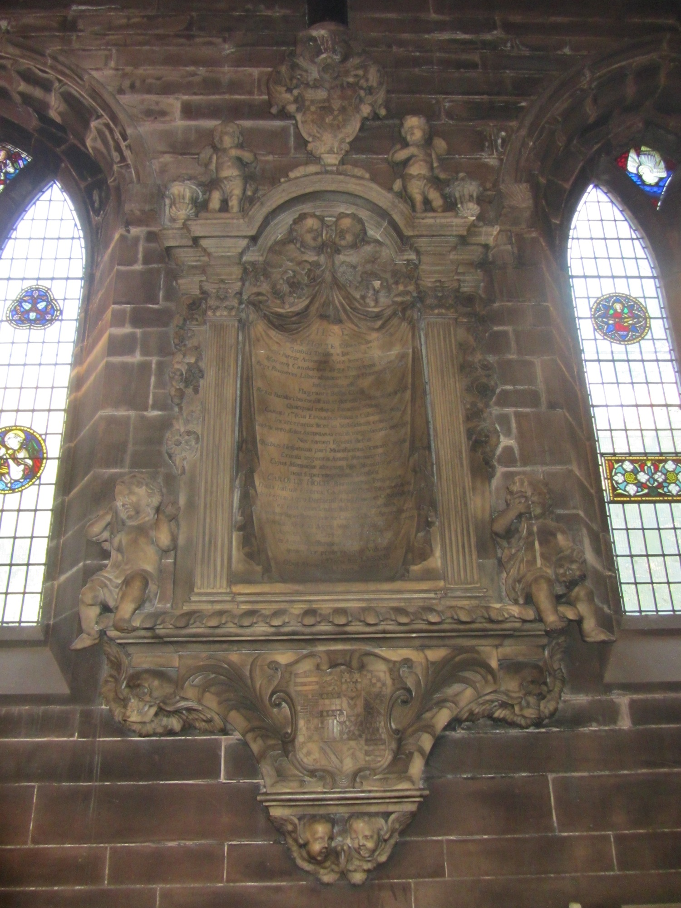
ornate marble monument with cherubs/putti, coat of arms, and Latin inscription H.S.E. THOMAS HOLTE Eques et Baronettus Quibus Titulis a Iacobo 1mo Ob Patriae Amorem Vitae Integritatem Morum Candorem erga Principiam Fidem Erga Pauperes Liberalitatem erga Omnes Justitiam Insignitus est Flagrante Bello Civili Re sua Familiari bis confiscata et decima parte semel proscripta Quicquid reliquit Fanatica Rabies Caroli 1mi (cui Edvardus filius a Cubiculis fuit) Incarceratus licet in Subsidium contulit Tandem vero Aedes Astonianas nobili magnificentia extruxit Nec tamen Egenus defuit Quibus Hospitium pari Munificentia Virum et Eximia ingenii Animi Monumenta Cujus Memoriae aliorum haec Monumenta non supererunt CAROLUS HOLTE Baronettus Proavus Duas habuit Uxores, Gratiam Cor. Brabazon de Hoghton Agro Derbiensi Arm. filiam et Catharinam ex qua quidem [remainder partially obscured]. (This is the monument to Sir Thomas Holte, 1st Baronet of Aston Hall. A contemporary English rendering from historical sources is: “Here lies buried Sir Thomas Holte, Knight and Baronet, by which titles he was, on account of the love he bore to his country, the integrity of his life, purity of his morals, fidelity to his Prince, liberality to the poor, and justice towards all, honoured by James the First. During the raging of the civil war, although imprisoned, he contributed to the cause of Charles the First (to whom his son Edward was chamberlain) from whatever fanatical fury had left him; his property having been twice confiscated, and once taxed to the amount of one-tenth. Nevertheless, he erected Aston Hall with a noble magnificence; nor was he wanting towards the poor, for whom, with similar munificence, he built the neighbouring hospital: both worthy monuments of his exalted mind…” It notes his death in his 83rd year in 1654.)
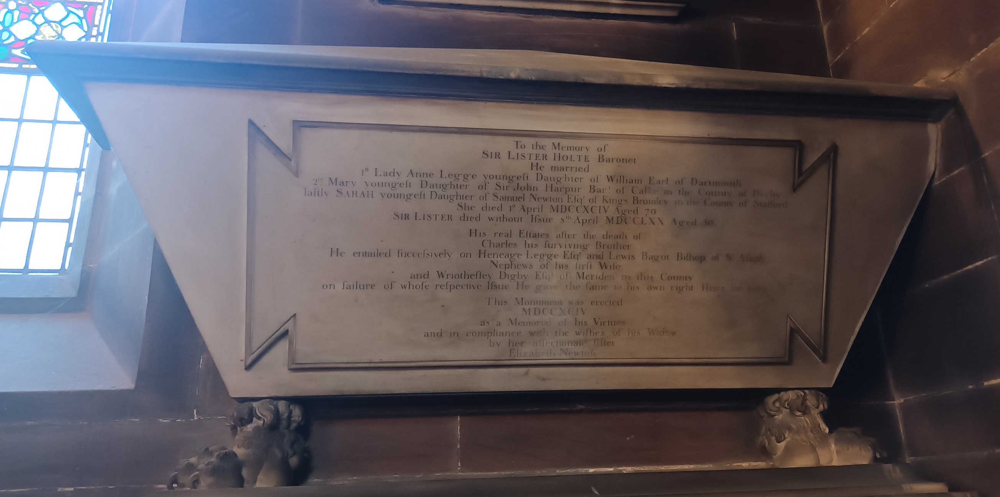
To the Memory of SIR LISTER HOLTE Baronet He married 1st Lady Anne Legge youngest Daughter of William Earl of Dartmouth 2nd Mary youngest Daughter of Sir John Harpur Bar. of Calke in the County of Derby lastly SARAH youngest Daughter of Samuel Newton Esq of Kings Bromley in the County of Stafford She died 1st April MDCCXCIV Aged 70 SIR LISTER died without Issue 8th April MDCCLXX Aged 50 His real Estates after the death of Charles his Surviving Brother He entailed successively on Heneage Legge Esq and Lewis Bagot Bishop of St Asaph Nephews of his first Wife and Wriothesley Digby Esq of Meriden in this County on failure of whose respective Issue He gave the same to his own right Heirs for ever This Monument was erected MDCCXCIV as a Memorial of his Virtues and in compliance with the wishes of his Widow by her affectionate Sister Elizabeth Newton.
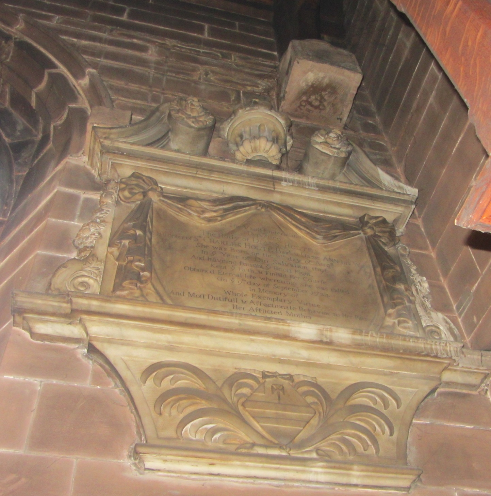
Aston Parish Church Coat of Arms
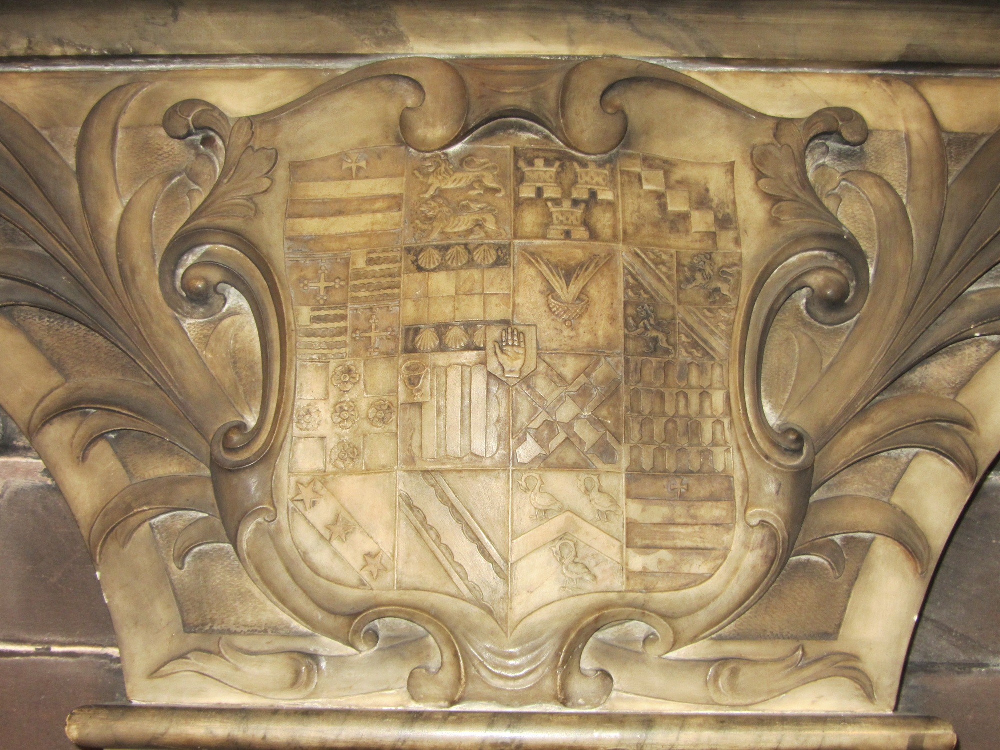
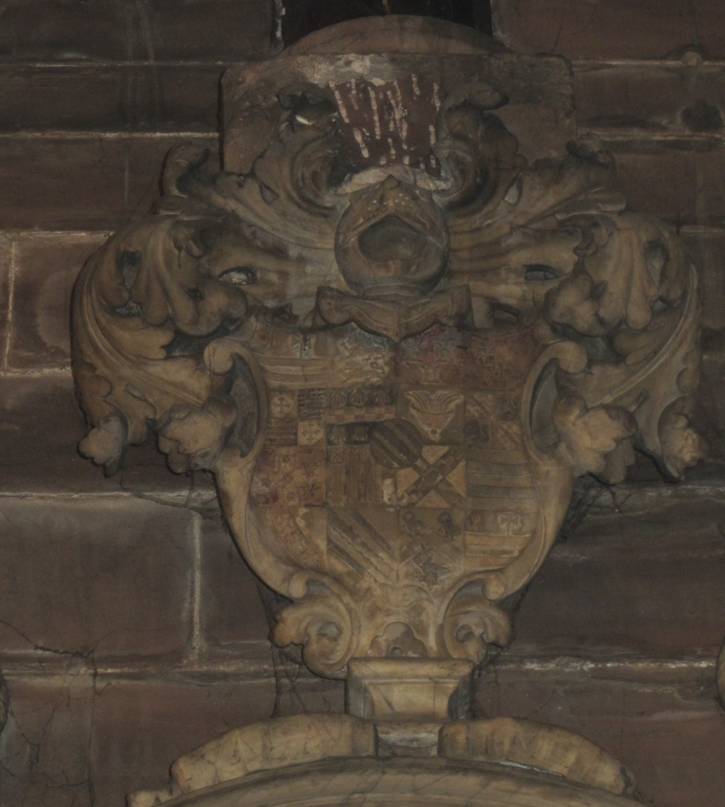
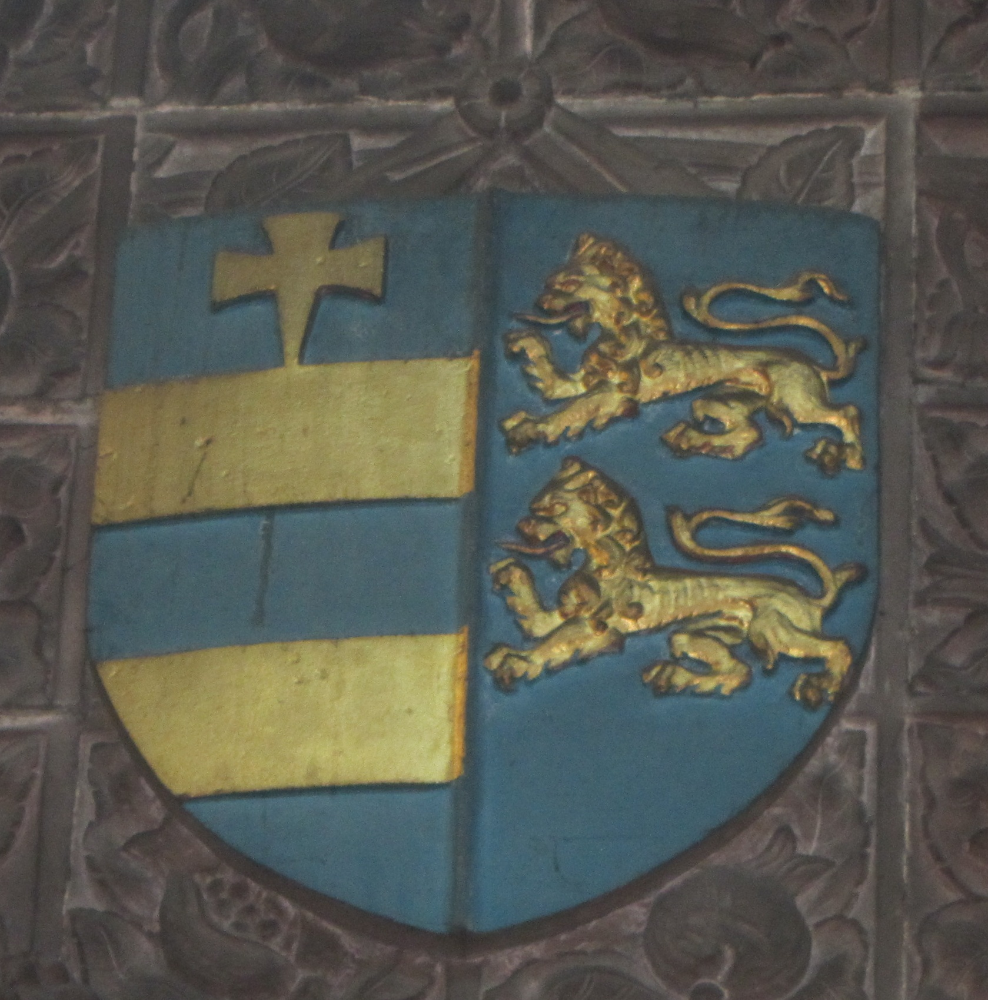